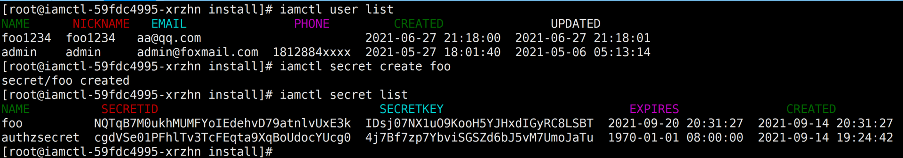
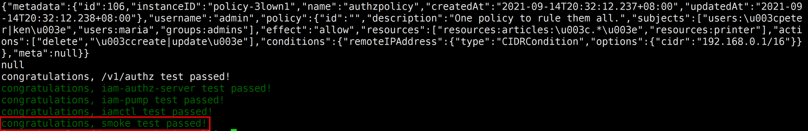

- 00 开篇词 从 0 开始搭建一个企业级 Go 应用.md
- 01 IAM系统概述：我们要实现什么样的 Go 项目？.md
- 02 环境准备：如何安装和配置一个基本的 Go 开发环境？.md
- 03 项目部署：如何快速部署 IAM 系统？.md
- 04 规范设计（上）：项目开发杂乱无章，如何规范？.md
- 05 规范设计（下）：commit 信息风格迥异、难以阅读，如何规范？.md
- 06 目录结构设计：如何组织一个可维护、可扩展的代码目录？.md
- 07 工作流设计：如何设计合理的多人开发模式？.md
- 08 研发流程设计（上）：如何设计 Go 项目的开发流程？.md
- 09 研发流程设计（下）：如何管理应用的生命周期？.md
- 10 设计方法：怎么写出优雅的 Go 项目？.md
- 11 设计模式：Go常用设计模式概述.md
- 12 API 风格（上）：如何设计RESTful API？.md
- 13 API 风格（下）：RPC API介绍.md
- 14 项目管理：如何编写高质量的Makefile？.md
- 15 研发流程实战：IAM项目是如何进行研发流程管理的？.md
- 16 代码检查：如何进行静态代码检查？.md
- 17 API 文档：如何生成 Swagger API 文档 ？.md
- 18 错误处理（上）：如何设计一套科学的错误码？.md
- 19 错误处理（下）：如何设计错误包？.md
- 20 日志处理（上）：如何设计日志包并记录日志？.md
- 21 日志处理（下）：手把手教你从 0 编写一个日志包.md
- 22 应用构建三剑客：Pflag、Viper、Cobra 核心功能介绍.md
- 23 应用构建实战：如何构建一个优秀的企业应用框架？.md
- 24 Web 服务：Web 服务核心功能有哪些，如何实现？.md
- 25 认证机制：应用程序如何进行访问认证？.md
- 26 IAM项目是如何设计和实现访问认证功能的？.md
- 27 权限模型：5大权限模型是如何进行资源授权的？.md
- 28 控制流（上）：通过iam-apiserver设计，看Web服务的构建.md
- 29 控制流（下）：iam-apiserver服务核心功能实现讲解.md
- 30 ORM：CURD 神器 GORM 包介绍及实战.md
- 31 数据流：通过iam-authz-server设计，看数据流服务的设计.md
- 32 数据处理：如何高效处理应用程序产生的数据？.md
- 33 SDK 设计（上）：如何设计出一个优秀的 Go SDK？.md
- 34 SDK 设计（下）：IAM项目Go SDK设计和实现.md
- 35 效率神器：如何设计和实现一个命令行客户端工具？.md
- 36 代码测试（上）：如何编写 Go 语言单元测试和性能测试用例？.md
- 37 代码测试（下）：Go 语言其他测试类型及 IAM 测试介绍.md
- 38 性能分析（上）：如何分析 Go 语言代码的性能？.md
- 39 性能分析（下）：API Server性能测试和调优实战.md
- 40 软件部署实战（上）：部署方案及负载均衡、高可用组件介绍.md
- 41 软件部署实战（中）：IAM 系统生产环境部署实战.md
- 42 软件部署实战（下）：IAM系统安全加固、水平扩缩容实战.md
- 43 技术演进（上）：虚拟化技术演进之路.md
- 44 技术演进（下）：软件架构和应用生命周期技术演进之路.md
- 45 基于Kubernetes的云原生架构设计.md
- 46 如何制作Docker镜像？.md
- 47 如何编写Kubernetes资源定义文件？.md
- 48 IAM 容器化部署实战.md
- 49 服务编排（上）：Helm服务编排基础知识.md
- 50 服务编排（下）：基于Helm的服务编排部署实战.md
- 51 基于 GitHub Actions 的 CI 实战.md
- 特别放送 Go Modules依赖包管理全讲.md
- 特别放送 Go Modules实战.md
- 特别放送 IAM排障指南.md
- 特别放送 分布式作业系统设计和实现.md
- 特别放送 给你一份Go项目中最常用的Makefile核心语法.md
- 特别放送 给你一份清晰、可直接套用的Go编码规范.md
- 直播加餐 如何从小白进阶成 Go 语言专家？.md
- 结束语 如何让自己的 Go 研发之路走得更远？.md
50 服务编排（下）：基于Helm的服务编排部署实战
你好，我是孔令飞。
上一讲，我介绍了 Helm 的基础知识，并带着你部署了一个简单的应用。掌握Helm的基础知识之后，今天我们就来实战下，一起通过Helm部署一个IAM应用。
通过Helm部署IAM应用，首先需要制作IAM Chart包，然后通过Chart包来一键部署IAM应用。在实际开发中，我们需要将应用部署在不同的环境中，所以我也会给你演示下如何在多环境中部署IAM应用。
制作IAM Chart包
在部署IAM应用之前，我们首先需要制作一个IAM Chart包。
我们假设IAM项目源码根目录为${IAM_ROOT}，进入 ${IAM_ROOT}/deployments目录，在该目录下创建Chart包。具体创建流程分为四个步骤，下面我来详细介绍下。
第一步，创建一个模板Chart。
Chart是一个组织在文件目录中的集合，目录名称就是Chart名称（没有版本信息）。你可以看看这个 Chart 开发指南 ，它介绍了如何开发你自己的Chart。
不过，这里你也可以使用 helm create 命令来快速创建一个模板Chart，并基于该Chart进行修改，得到你自己的Chart。创建命令如下：
$ helm create iam
helm create iam会在当前目录下生成一个iam目录，里面存放的就是Chart文件。Chart目录结构及文件如下：
$ tree -FC iam/
├── charts/ # [可选]: 该目录中放置当前Chart依赖的其他Chart
├── Chart.yaml # YAML文件，用于描述Chart的基本信息，包括名称版本等
├── templates/ # [可选]: 部署文件模版目录，模版使用的值来自values.yaml和由Tiller提供的值
│ ├── deployment.yaml # Kubernetes Deployment object
│ ├── _helpers.tpl # 用于修改Kubernetes objcet配置的模板
│ ├── hpa.yaml # Kubernetes HPA object
│ ├── ingress.yaml # Kubernetes Ingress object
│ ├── NOTES.txt # [可选]: 放置Chart的使用指南
│ ├── serviceaccount.yaml
│ ├── service.yaml
│ └── tests/ # 定义了一些测试资源
│ └── test-connection.yaml
└── values.yaml # Chart的默认配置文件
上面的目录中，有两个比较重要的文件：
- Chart.yaml 文件
- templates目录
下面我来详细介绍下这两个文件。我们先来看Chart.yaml 文件。
Chart.yaml用来描述Chart的基本信息，包括名称、版本等，内容如下：
apiVersion: Chart API 版本 （必需）
name: Chart名称 （必需）
version: 语义化版本（必需）
kubeVersion: 兼容Kubernetes版本的语义化版本（可选）
description: 对这个项目的一句话描述（可选）
type: Chart类型 （可选）
keywords:
- 关于项目的一组关键字（可选）
home: 项目home页面的URL （可选）
sources:
- 项目源码的URL列表（可选）
dependencies: # chart 必要条件列表 （可选）
- name: Chart名称 (nginx)
version: Chart版本 ("1.2.3")
repository: （可选）仓库URL ("https://example.com/charts") 或别名 ("@repo-name")
condition: （可选） 解析为布尔值的YAML路径，用于启用/禁用Chart(e.g. subchart1.enabled )
tags: # （可选）
- 用于一次启用/禁用 一组Chart的tag
import-values: # （可选）
- ImportValue 保存源值到导入父键的映射。每项可以是字符串或者一对子/父列表项
alias: （可选） Chart中使用的别名。当你要多次添加相同的Chart时会很有用
maintainers: # （可选）
- name: 维护者名字 （每个维护者都需要）
email: 维护者邮箱 （每个维护者可选）
url: 维护者URL （每个维护者可选）
icon: 用作icon的SVG或PNG图片URL （可选）
appVersion: 包含的应用版本（可选）。不需要是语义化，建议使用引号
deprecated: 不被推荐的Chart（可选，布尔值）
annotations:
example: 按名称输入的批注列表 （可选）.
我们再来看下templates目录这个文件。
templates目录中包含了应用中各个Kubernetes资源的YAML格式资源定义模板，例如：
apiVersion: v1
kind: Service
metadata:
labels:
app: {{ .Values.pump.name }}
name: {{ .Values.pump.name }}
spec:
ports:
- name: http
protocol: TCP
{{- toYaml .Values.pump.service.http| nindent 4 }}
selector:
app: {{ .Values.pump.name }}
sessionAffinity: None
type: {{ .Values.serviceType }}
{{ .Values.pump.name }}会被deployments/iam/values.yaml文件中pump.name的值替换。上面的模版语法扩展了 Go text/template包的语法：
# 这种方式定义的模版，会去除test模版尾部所有的空行
{{- define "test"}}
模版内容
{{- end}}
# 去除test模版头部的第一个空行
{{- template "test" }}
下面是用于YAML文件前置空格的语法：
# 这种方式定义的模版，会去除test模版头部和尾部所有的空行
{{- define "test" -}}
模版内容
{{- end -}}
# 可以在test模版每一行的头部增加4个空格，用于YAML文件的对齐
{{ include "test" | indent 4}}
最后，这里有三点需要你注意：
- Chart名称必须是小写字母和数字，单词之间可以使用横杠
-分隔，Chart名称中不能用大写字母，也不能用下划线，.号也不行。 - 尽可能使用SemVer 2来表示版本号。
- YAML 文件应该按照双空格的形式缩进(一定不要使用tab键)。
第二步，编辑 iam 目录下的Chart文件。
我们可以基于helm create生成的模板Chart来构建自己的Chart包。这里我们添加了创建iam-apiserver、iam-authz-server、iam-pump、iamctl服务需要的YAML格式的Kubernetes资源文件模板：
$ ls -1 iam/templates/*.yaml
iam/templates/hpa.yaml # Kubernetes HPA模板文件
iam/templates/iam-apiserver-deployment.yaml # iam-apiserver服务deployment模板文件
iam/templates/iam-apiserver-service.yaml # iam-apiserver服务service模板文件
iam/templates/iam-authz-server-deployment.yaml # iam-authz-server服务deployment模板文件
iam/templates/iam-authz-server-service.yaml # iam-authz-server服务service模板文件
iam/templates/iamctl-deployment.yaml # iamctl服务deployment模板文件
iam/templates/iam-pump-deployment.yaml # iam-pump服务deployment模板文件
iam/templates/iam-pump-service.yaml # iam-pump服务service模板文件
模板的具体内容，你可以查看deployments/iam/templates/。
在编辑 Chart 时，我们可以通过 helm lint 验证格式是否正确，例如：
$ helm lint iam
==> Linting iam
1 chart(s) linted, 0 chart(s) failed
0 chart(s) failed 说明当前Iam Chart包是通过校验的。
第三步，修改Chart的配置文件，添加自定义配置。
我们可以编辑deployments/iam/values.yaml文件，定制自己的配置。具体配置你可以参考deployments/iam/values.yaml。
在修改 values.yaml 文件时，你可以参考下面这些最佳实践。
- 变量名称以小写字母开头，单词按驼峰区分，例如
chickenNoodleSoup。 - 给所有字符串类型的值加上引号。
- 为了避免整数转换问题，将整型存储为字符串更好，并用
{{ int $value }}在模板中将字符串转回整型。 values.yaml中定义的每个属性都应该文档化。文档字符串应该以它要描述的属性开头，并至少给出一句描述。例如：
# serverHost is the host name for the webserver
serverHost: example
# serverPort is the HTTP listener port for the webserver
serverPort: 9191
这里需要注意，所有的Helm内置变量都以大写字母开头，以便与用户定义的value进行区分，例如.Release.Name、.Capabilities.KubeVersion。
为了安全，values.yaml中只配置Kubernetes资源相关的配置项，例如Deployment副本数、Service端口等。至于iam-apiserver、iam-authz-server、iam-pump、iamctl组件的配置文件，我们创建单独的ConfigMap，并在Deployment中引用。
第四步，打包Chart，并上传到Chart仓库中。
这是一个可选步骤，可以根据你的实际需要来选择。如果想了解具体操作，你可以查看 Helm chart 仓库获取更多信息。
最后，IAM应用的Chart包见deployments/iam。
IAM Chart部署
上面，我们制作了IAM应用的Chart包，接下来我们就使用这个Chart包来一键创建IAM应用。IAM Chart部署一共分为10个步骤，你可以跟着我一步步操作下。
第一步，配置scripts/install/environment.sh。
scripts/install/environment.sh文件中包含了各类自定义配置，你主要配置下面这些跟数据库相关的就可以，其他配置使用默认值。
- MariaDB配置：environment.sh文件中以
MARIADB_开头的变量。 - Redis配置：environment.sh文件中以
REDIS_开头的变量。 - MongoDB配置：environment.sh文件中以
MONGO_开头的变量。
第二步，创建IAM应用的配置文件。
$ cd ${IAM_ROOT}
$ make gen.defaultconfigs # 生成iam-apiserver、iam-authz-server、iam-pump、iamctl组件的默认配置文件
$ make gen.ca # 生成 CA 证书
上面的命令会将IAM的配置文件存放在目录${IAM_ROOT}/_output/configs/下。
第三步，创建 iam 命名空间。
我们将IAM应用涉及到的各类资源都创建在iam命名空间中。将IAM资源创建在独立的命名空间中，不仅方便维护，还可以有效避免影响其他Kubernetes资源。
$ kubectl create namespace iam
第四步，将IAM各服务的配置文件，以ConfigMap资源的形式保存在Kubernetes集群中。
$ kubectl -n iam create configmap iam --from-file=${IAM_ROOT}/_output/configs/
$ kubectl -n iam get configmap iam
NAME DATA AGE
iam 4 13s
第五步，将IAM各服务使用的证书文件，以ConfigMap资源的形式保存在Kubernetes集群中。
$ kubectl -n iam create configmap iam-cert --from-file=${IAM_ROOT}/_output/cert
$ kubectl -n iam get configmap iam-cert
NAME DATA AGE
iam-cert 14 12s
第六步，创建镜像仓库访问密钥。
在准备阶段，我们开通了腾讯云镜像仓库服务，并创建了用户10000099xxxx，密码为iam59!z$。
接下来，我们就可以创建docker-registry secret了。Kubernetes在下载Docker镜像时，需要docker-registry secret来进行认证。创建命令如下：
$ kubectl -n iam create secret docker-registry ccr-registry --docker-server=ccr.ccs.tencentyun.com --docker-username=10000099xxxx --docker-password='iam59!z$'
第七步，创建Docker镜像，并Push到镜像仓库。
$ make push REGISTRY_PREFIX=ccr.ccs.tencentyun.com/marmotedu VERSION=v1.1.0
第八步，安装IAM Chart包。
在49讲里，我介绍了4种安装Chart包的方法。这里，我们通过未打包的IAM Chart路径来安装，安装方法如下：
$ cd ${IAM_ROOT}
$ helm -n iam install iam deployments/iam
NAME: iam
LAST DEPLOYED: Sat Aug 21 17:46:56 2021
NAMESPACE: iam
STATUS: deployed
REVISION: 1
TEST SUITE: None
执行 helm install 后，Kubernetes会自动部署应用，等到IAM应用的Pod都处在 Running 状态时，说明IAM应用已经成功安装：
$ kubectl -n iam get pods|grep iam
iam-apiserver-cb4ff955-hs827 1/1 Running 0 66s
iam-authz-server-7fccc7db8d-chwnn 1/1 Running 0 66s
iam-pump-78b57b4464-rrlbf 1/1 Running 0 66s
iamctl-59fdc4995-xrzhn 1/1 Running 0 66s
第九步，测试IAM应用。
我们通过helm install在iam命令空间下创建了一个测试Deployment iamctl。你可以登陆iamctl Deployment所创建出来的Pod，执行一些运维操作和冒烟测试。登陆命令如下：
$ kubectl -n iam exec -it `kubectl -n iam get pods -l app=iamctl | awk '/iamctl/{print $1}'` -- bash
登陆到iamctl-xxxxxxxxxx-xxxxx Pod中后，你就可以执行运维操作和冒烟测试了。
先来看运维操作。iamctl工具以子命令的方式对外提供功能，你可以使用它提供的各类功能，如下图所示：

再来看冒烟测试：
# cd /opt/iam/scripts/install
# ./test.sh iam::test::smoke
如果./test.sh iam::test::smoke命令打印的输出中，最后一行为congratulations, smoke test passed!字符串，就说明IAM应用安装成功。如下图所示：

第十步，销毁EKS集群的资源。
$ kubectl delete namespace iam
你可以根据需要选择是否删除EKS集群，如果不需要了就可以选择删除。
IAM应用多环境部署
在实际的项目开发中，我们需要将IAM应用部署到不同的环境中，不同环境的配置文件是不同的，那么IAM项目是如何进行多环境部署的呢？
IAM项目在configs目录下创建了多个Helm values文件（格式为values-{envName}-env.yaml）：
- values-test-env.yaml，测试环境Helm values文件。
- values-pre-env.yaml，预发环境Helm values文件。
- values-prod-env.yaml，生产环境Helm values文件。
在部署IAM应用时，我们在命令行指定-f参数，例如：
$ helm -n iam install -f configs/values-test-env.yaml iam deployments/iam # 安装到测试环境。
总结
这一讲，我们通过 helm create iam 创建了一个模板Chart，并基于这个模板Chart包进行了二次开发，最终创建了IAM应用的Helm Chart包：deployments/iam。
有了Helm Chart包，我们就可以通过 helm -n iam install iam deployments/iam 命令来一键部署好整个IAM应用。当IAM应用中的所有Pod都处在 Running 状态后，说明IAM应用被成功部署。
最后，我们可以登录iamctl容器，执行 test.sh iam::test::smoke 命令，来对IAM应用进行冒烟测试。
课后练习
- 试着在Helm Chart中加入MariaDB、MongoDB、Redis模板，通过Helm一键部署好整个IAM应用。
- 试着通过
helm命令升级、回滚和删除IAM应用。
欢迎你在留言区与我交流讨论，我们下一讲见。
© 2019 - 2023 Liangliang Lee. Powered by gin and hexo-theme-book.